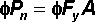

and is measured in units of force, such as kilonewtons
(kN). Tensile strength can be calculated using the following equation:
and is measured in units of force, such as kilonewtons
(kN). Tensile strength can be calculated using the following equation:
The tensile strength of a member is the internal at which a member becomes in . If the actual member force exceeds the tensile strength, then the member may fail.
In the Bridge Designer 2016, tensile strength is based on the failure mode.
Tensile strength is represented by the symbol and is measured in units of force, such as kilonewtons
(kN). Tensile strength can be calculated using the following equation:

where
f = 0.95 is the for a member in tension
Fy is the
A is the of the member
This equation is taken from the 1994 LRFD Bridge Design Specifications.
To obtain the numerical value of Fy for a given material, and A for a given cross-section and , click the
The Bridge Designer 2016 calculates the tensile strength of each member in your during the Load Test.
The tensile strength of a member is always greater than its compressive strength. If the member is relatively long and slender, the difference can be quite substantial.